WeGo Humanoid Studio
다관절 손을 갖춘 휴머노이드 로봇을 위한 원격조작 · 데이터 수집 · 스킬 학습 통합 솔루션 — 납품받은 파일부터 로봇에서 실행되는 학습된 스킬까지.
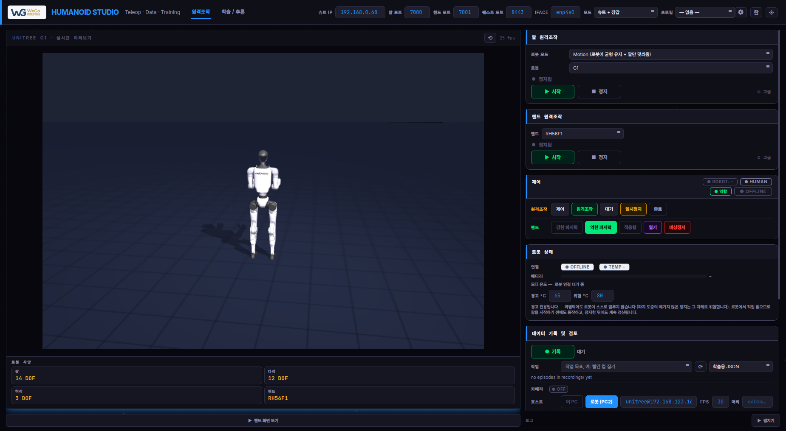
이 설명서에 대하여
| 대상 | Humanoid Studio 를 설치하고 운용하는 작업자 (Unitree G1 · R1 · H2 휴머노이드, 다관절 손) |
| 근거 문서 | Humanoid Studio 2.1.0 배포판의 화면과 동작 · 함께 납품되는 INSTALL.md · TROUBLESHOOTING.md · docs/API.md |
| 함께 보는 책 | Unitree G1 운용 설명서 · Unitree R1 운용 설명서 · Unitree H2 운용 설명서 (로봇 자체의 운용) |
| 판 | 한국어판 · 2026.11.18 |
| 문의 | go.support@wego-robotics.com |
목차
- 01이 시스템이 하는 일
- 02납품 내용과 준비물
- 03설치
- 04라이선스 활성화
- 05로봇과 모션캡처 장비 연결
- 06아무것도 연결하지 않은 첫 실행
- 07제어판 개요
- 08제어판 상세 — 모든 항목
- 09상태 배지
- 10시스템 조작 — 슈트와 VR 헤드셋
- 11손 파지 모드
- 12비상 정지
- 13기록, 카메라, 검토 및 편집
- 14학습 및 스킬 실행
- 15설정 프로필
- 16자체 소프트웨어 연동
- 17안전 지침
- 18지원 요청
이 시스템이 하는 일
모션캡처 장비를 착용한 작업자가 평소처럼 움직이면 휴머노이드 로봇이 그 동작을 실시간으로 따라 합니다 — 팔과 손가락 하나하나까지 — 실시간 3D 미리보기가 있어 로봇이 움직이기 전에 무엇을 하려는지 항상 먼저 확인할 수 있습니다. 같은 시스템으로 시연을 기록하고, 그 기록으로 스킬을 학습시키고, 학습된 스킬을 사람이 조작할 때와 똑같은 안전 경로로 로봇에서 실행할 수 있습니다.
요약
- 원격조작 — 자신의 몸과 손가락을 움직여 휴머노이드의 팔과 다관절 손을 조작합니다.
- 미리보기 — 로봇이 움직이기 전에 모든 동작을 안전하게 확인합니다.
- 섬세한 파지 — 약한 파지력과 촉각 감지 모드로 깨지기 쉬운 물체도 부수지 않고 다룹니다.
- 데이터 수집 — 버튼 하나로 시연과 카메라 영상을 기록합니다.
- 검토 · 편집 · 재생 — 어떤 기록이든 확인하고, 다듬고, 재생합니다.
- 스킬 학습과 실행 — 기록으로 스킬을 학습시키고 로봇에서 실행합니다.
지원 로봇과 손
세 종류의 휴머노이드 — G1, R1, H2 — 와 네 종류의 다관절 손 — RH56F1, Inspire RH56DFX, BrainCo Revo2, Unitree Dex3-1 — 를 지원합니다. 드롭다운에서 선택하면 3D 미리보기도 함께 바뀌므로, 실제로 조작 중인 장비를 항상 화면에서 확인할 수 있습니다. 납품된 시스템은 고객의 로봇과 손에 맞추어 구성 및 검증되어 있습니다. 다른 조합도 선택은 가능하지만 지원팀과 함께 사용하십시오.
납품 내용과 준비물
wego-teleop-<버전>.tar.gz 파일과 그 옆의
.sha256 체크섬 파일, 또는 단일 실행 파일인
wego-teleop-<버전>-install.run 중 하나를 받으셨을
것입니다. 두 파일은 내용이 완전히 동일하며, .run 파일은 "압축을
풀고 install.sh 를 실행"하는 과정을 한 번에 처리하는 버전일
뿐입니다. 어느 쪽이든 모든 것을 포함하고 있습니다 — 자체
Python 실행 환경, 로봇 모델, 손 모델, 글꼴, 학습 스택까지. 설치 중에
인터넷에서 내려받는 것은 없으며, 이미 설치된 다른 Python 환경에는 영향을
주지 않습니다.
| 설치 폴더 안 | 내용 |
|---|---|
| bin/ | 실행 명령들 — 평소 쓰는 것은 wego-gui, 활성화는 wego-license |
| env-gmr/, env-dex/, env-lerobot/ | 포함된 세 개의 Python 실행 환경 |
| assets/ | 로봇 · 손 모델, 글꼴, 아트워크, 모션캡처 SDK |
| examples/, tools/ | 읽고 수정할 수 있는 참고 스크립트 |
| jetson/ | 로봇에 설치하는 오프라인 키트 |
| docs/, *.md | 본 가이드를 포함한 문서 |
| VERSION | 실행 중인 빌드 번호 — 지원 요청 시 함께 알려주십시오 |
작업자 PC
| 최소 사양 | 비고 | |
|---|---|---|
| 운영체제 | Ubuntu 22.04 또는 24.04 LTS 64비트 | 22.04 는 이 빌드 기준 배포판, 24.04 는 실제 데스크톱에서 네이티브 설치 검증 완료(단, X11 세션 — Wayland 세션은 아직 미검증이니 로그인 시 X11 선택 권장). 그 밖의 배포판은 Docker 컨테이너로 설치 — 절차는 INSTALL.md 참고 |
| 디스크 | 여유 공간 25 GB | 압축 파일 5.4 GB, 설치 후 14 GB, 그 밖에 기록 데이터 |
| 메모리 | 16 GB | 학습까지 한다면 32 GB |
| 그래픽 | OpenGL 이 동작하는 GPU | 3D 미리보기에 필요합니다 |
| 학습용 (선택) | NVIDIA GPU + 드라이버 550 이상 | VRAM 8 GB 면 ACT · Diffusion 학습 가능 — §14 참조. CUDA 는 패키지 내부 Python 런타임에 이미 번들되어 있어 시스템에 별도로 설치할 필요가 없습니다. TensorRT 는 사용하지 않습니다 |
| 네트워크 | 로봇 연결용 유선 포트 1개 | 나머지 통신용 Wi-Fi 등 두 번째 인터페이스가 있으면 편리합니다 |
lsb_release -d # Ubuntu 22.04 / 24.04 df -h ~ # 여유 공간 nvidia-smi # 학습할 경우에만 — 드라이버 버전이 출력되어야 합니다
libxcb-cursor0 가 포함되어 있지 않아,
설치 없이 제어판을 실행하면 qt.qpa.plugin: Could not load the Qt
platform plugin "xcb" 오류와 함께 화면이 바로 종료됩니다. 설치 전에
미리 넣어 두십시오:
sudo apt install libxcb-cursor0
nvidia/GR00T-N1.5-3B)로,
실제로 선택해 학습을 돌릴 때만 Hugging Face 에서 온디맨드로 내려받습니다 —
사전 설치 목록에 포함되지 않으며 버전 관리 대상도 아닙니다.로봇 쪽
- 로봇(Unitree G1, R1 또는 H2)의 전원이 켜져 있고 이더넷으로 접근 가능할 것.
- 다관절 손이 장착되어 있을 것. 로봇의 자체 컴퓨터에 연결되어 있다면 그 컴퓨터에 손 브리지가 설치되어 있어야 합니다 (§5).
- 시연 영상을 기록할 계획이라면 카메라 (§13).
작업자
- 모션 캡처 장비(Mocap Suit, 필요 시 mHand Pro 장갑)를 해당 장비의 설명서에 따라 착용하고 캘리브레이션할 것.
설치
.run 파일을 받으셨다면
sha256sum -c wego-teleop-<버전>-install.run.sha256 # 무결성 확인, "OK" 출력 chmod +x wego-teleop-<버전>-install.run ./wego-teleop-<버전>-install.run ~/wego-teleop # 압축 해제 후 설치까지 한 번에
.tar.gz 를 받으셨다면
# 1. 내려받은 파일이 온전한지 확인 ("OK" 가 출력되어야 합니다)
sha256sum -c wego-teleop-<버전>.tar.gz.sha256
# 2. 계속 사용할 위치에 압축을 풉니다
tar xzf wego-teleop-<버전>.tar.gz -C ~/
# 3. 설치 마무리
cd ~/wego-teleop
./install.sh
어느 쪽이든 가장 먼저 라이선스 약관이 표시됩니다 —
읽어보신 뒤 ACCEPT 를 입력하면 계속됩니다 (한 번만 하면 되는
절차이며, 약관 내용이 바뀌지 않는 한 다음 재설치·업데이트 때는 다시 묻지
않습니다). 사람이 지켜보지 않는 자동화된 설치라면
LICENSE_TERMS.md 를 미리 직접 읽어본 뒤 명령에
--accept-eula 를 추가하거나(또는 WEGO_EULA_ACCEPT=1
환경변수 설정) 하십시오. 약관은 언제든 bin/wego-license --terms
로 다시 볼 수 있습니다.
install.sh 는 각 단계를 한 줄씩 출력하고 마지막에
Installed (<버전>) 을 표시합니다. 중간에 !!
로 시작하는 줄이 나오면 멈추고 TROUBLESHOOTING.md §1 을
보십시오.
INSTALL.md §13) — 새 위치에 다시 압축을 풀고
설치하십시오.제어판 실행:
~/wego-teleop/bin/wego-gui
짧은 인트로 화면이 지나간 뒤, 이 가이드 표지에 보이는 제어판이 나타납니다 — 왼쪽에 3D 화면 두 개, 오른쪽에 카드 목록, 위쪽 헤더에 로고와 페이지 탭, 연결 항목이 있습니다.
라이선스 활성화
이 소프트웨어는 컴퓨터 한 대 단위로 사용이 허가됩니다.
install.sh 가 현재 상태를 알려줍니다.
이미 활성화됨 — 할 일이 없습니다. 미리 알려주신 컴퓨터에 맞춰 패키지를 만들어 드린 경우 라이선스가 패키지 안에 함께 들어 있으므로, 설치 자체가 활성화 과정 전부입니다.
이 컴퓨터와 라이선스가 맞지 않음 — 설치한 컴퓨터가 패키지를 만들 때 지정한 컴퓨터와 다릅니다. 메시지에 표시된 Machine ID 를 보내주십시오. 다시 설치할 필요는 없습니다 — 짝이 잘못된 것뿐입니다.
아직 활성화되지 않음 — 필요한 파일이 이미 만들어져
있습니다. 화면에서 진행할 수도 있습니다: bin/wego-gui 를
실행하면 라이선스 창이 열리며 Copy Machine ID,
Save request file…, Activate…
를 제공합니다 — 여기서 활성화하면 그대로 프로그램이 이어서 실행됩니다.
# 1. 요청 파일을 만듭니다 (다시 만들 수도 있습니다) ~/wego-teleop/bin/wego-license --request # → ~/wego_machine_id.txt 를 go.support@wego-robotics.com 으로 전송 # 2. WeGo 가 보내준 라이선스 파일을 설치합니다 ~/wego-teleop/bin/wego-license --activate ~/Downloads/받은파일.key # 3. 언제든 확인 ~/wego-teleop/bin/wego-license --status
라이선스는 설치 폴더가 아니라 이 컴퓨터에 연결됩니다 — 다시 설치하거나 업데이트해도, 컴퓨터 이름을 바꿔도, 우분투를 다시 설치해도, 도킹 스테이션을 연결해도, 랜카드나 디스크를 교체해도 그대로 동작합니다. 완전히 다른 컴퓨터로 옮길 때만 새 라이선스가 필요합니다. 직접 활성화한 라이선스가 패키지에 들어 있던 라이선스보다 항상 우선하므로, 갱신 라이선스는 다시 설치하지 않아도 바로 적용됩니다.
로봇과 모션캡처 장비 연결
5.1 네트워크 인터페이스 확인
로봇의 이더넷 케이블을 PC 에 연결하고 인터페이스 목록을 확인합니다:
ip link
UP 상태인 유선 인터페이스를 찾습니다 — 보통
enp4s0, eno1, enx… 같은 이름입니다.
이 이름을 적어 두십시오 — 제어판의 IFACE
항목에 넣는 값이며, 이 값을 잘못 넣는 것이 "로봇이 반응하지 않는다"의 가장
흔한 원인입니다.
5.2 로봇 네트워크에 PC 주소 지정
로봇은 192.168.123.x 대역을 사용합니다.
sudo ip addr add 192.168.123.222/24 dev enp4s0 # 실제 인터페이스 이름 sudo ip link set enp4s0 up ping -c3 192.168.123.164 # 로봇의 내장 컴퓨터
5.3 로봇이 실제로 응답하는지 확인
~/wego-teleop/bin/wego-gmr robot_telemetry enp4s0 # 실제 인터페이스 이름
관절 온도와 배터리 잔량이 약 1초마다 출력됩니다. 아무것도 출력되지
않으면 로봇의 신호가 PC 에 도달하지 않는 것이며, 제어
를 아무리 눌러도 소용이 없습니다 — TROUBLESHOOTING.md §2 를
보십시오.
5.4 제어판에 입력
헤더의 IFACE 에 인터페이스 이름을 넣습니다. 몇 초 안에 로봇 상태 카드에 배터리와 온도가 표시되면 연결이 정상이라는 확실한 증거입니다.
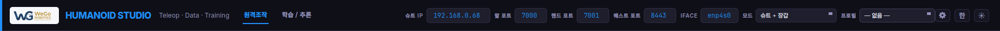
모션캡처 장비 연결
| 모드 | 장비 구성 | 사용 포트 |
|---|---|---|
| 슈트 (일체형) | 슈트 하나, 장갑을 슈트에 연결해 착용 | 팔 포트 7000 만 |
| 슈트 + 장갑 | 장갑 없는 슈트 몸체 + 별도의 mHand Pro 장갑 | 팔 포트 7000 + 핸드 포트 7001 |
| VR (퀘스트 / PICO) | 작업자가 착용한 Meta Quest 3 / 3S 또는 PICO 4 Ultra, 슈트 없음 (§10, VR 모드) | 8443 (TCP) + 8444 (UDP), Wi-Fi |
슈트 IP 는 모션캡처 소프트웨어가 데이터를 보내는
주소입니다(기본값 192.168.0.68). 모드는 시작 전에
선택하십시오 — 팔과 손 양쪽 구성을 한 번에 결정하므로, 나중에
바꾸려면 둘 다 정지했다가 다시 시작해야 합니다.
아무것도 연결하지 않은 첫 실행
로봇을 연결하기 전에 제어판 자체가 정상인지 확인합니다.
- 제어판을 실행합니다.
- 팔 원격조작 카드에서 ⚙ 고급 을 열고 시뮬레이션 전용 을 체크한 뒤 ▶ 시작 을 누릅니다.
- 왼쪽 화면에 로봇이, 손 화면(아래쪽, ▶ 핸드 화면 보기 로 열기)에 손이 표시됩니다.
- 움직여 보십시오 — 화면 속 로봇이 따라옵니다. 그 밖에는 아무 명령도 나가지 않습니다.
- ■ 정지 를 누릅니다.
화면이 비어 있다면 모션캡처 데이터가 오지 않는 것입니다 (§5). 제어판
자체가 실행되지 않으면 TROUBLESHOOTING.md §1 을 보십시오.
--no-robot 이 추가되어 로봇으로 나가는 DDS 통신이 전혀
없음을 보장합니다. 추종을 확인하는 가장 안전한 방법이며, 이 가이드의 모든
화면 캡처가 이 상태에서 촬영되었습니다.제어판 개요
헤더에서 전환하는 두 개의 페이지가 있습니다: 원격조작 과 학습 / 추론.
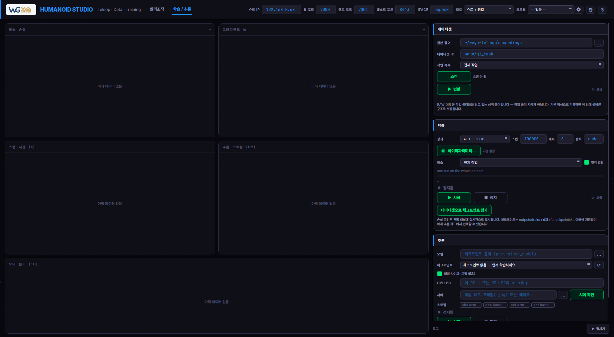
헤더는 두 페이지가 함께 씁니다: 프로필, 네트워크 항목, EN / 한 언어 버튼과 ☀ / ☾ 테마 버튼, 그리고 모든 설정을 모아 둔 ⚙ 설정 창 버튼입니다.
제어판 상세 — 모든 항목
이 절은 카드별로 모든 항목의 역할을 정리합니다. 처음 읽을 때는 넘어가고, 특정 항목이 궁금할 때 돌아오십시오.
8.1 팔 원격조작 카드
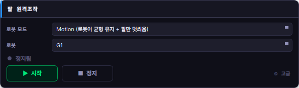
| 항목 | 역할 |
|---|---|
| 로봇 | 조작할 휴머노이드 (G1 / R1 / H2) |
| 로봇 모드 | Motion — 로봇이 스스로 균형을 잡고 우리는 팔만 덧씌웁니다(일반적인 선택). Debug — 모든 관절을 직접 제어하며 로봇을 반드시 지지하거나 매달아야 합니다. 제어판이 확인을 요구합니다 |
| ▶ 시작 / ■ 정지 | 팔 모듈 시작 / 정지. 시작해도 로봇은 움직이지 않습니다 |
| ⚙ 고급 | 이 카드가 실제로 실행하는 명령과 시뮬레이션 전용 체크박스(§6)를 표시합니다. 지원 요청 시 사용 — 위의 항목들만으로 필요한 모든 것을 조작할 수 있습니다 |
8.2 핸드 원격조작 카드
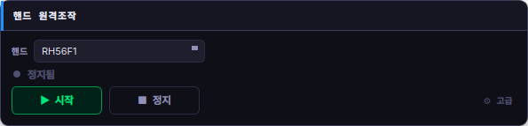
| 항목 | 역할 |
|---|---|
| 핸드 | 장착된 손 모델 (RH56F1 / Inspire RH56DFX / BrainCo Revo2 / Unitree Dex3-1) |
| ▶ 시작 / ■ 정지 | 손 모듈 시작 / 정지. 미리보기는 즉시 표시되며, 실제 손은 원격조작을 누르기 전까지 잠겨 있습니다 |
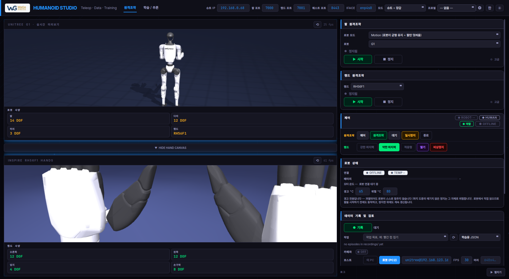
8.3 제어 카드
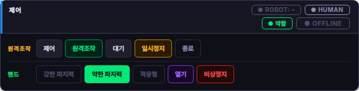
두 줄의 상태 배지(§9)와 실제로 로봇을 움직이는 버튼들입니다:
| 버튼 | 역할 |
|---|---|
| 제어 | 첫 실제 동작. 약 3초에 걸쳐 중립 준비 자세로 부드럽게 이동합니다 |
| 원격조작 | 추종 시작. 로봇의 현재 자세에서 약 2초에 걸쳐 진입하며, 진입 중에도 작업자를 계속 추종합니다 |
| 대기 | 추종을 멈추고 준비 자세로 복귀 |
| 일시정지 | 현재 자세를 유지하고 추종 중지 |
| 종료 | 팔을 해제하고 팔 모듈을 정상 종료 |
| 강한 파지력 / 약한 파지력 / 적응형 | 손 파지 모드 — §11 참조 |
| 열기 | 양손을 즉시 펴서 잡고 있던 물체를 놓습니다 |
| 비상정지 | 비상 정지 — §12 참조 |
8.4 로봇 상태 카드
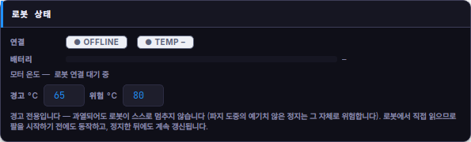
다른 기능과 무관하게 로봇에서 직접 읽습니다 — 팔을 시작하기 전에도 동작하고, 정지한 뒤에도 계속 갱신됩니다.
| 항목 | 의미 |
|---|---|
| 연결 | 로봇의 상태 메시지가 도착하고 있는지 |
| 배터리 | 잔량 |
| 모터 온도 | 가장 뜨거운 모터. 학습 / 추론 페이지에 그래프가 있습니다 |
| 경고 °C / 위험 °C | 사용자 지정 임계값 (기본 65 / 80) |
위험 임계값을 넘으면 배지가 빨갛게 바뀌고 가장 뜨거운 관절이 로그에 표시됩니다. 로봇이 스스로 멈추지는 않습니다 — 파지 도중의 예기치 않은 정지는 그 자체로 위험하기 때문입니다.
8.5 데이터 기록 및 검토 카드
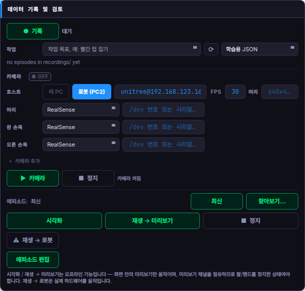
| 항목 | 역할 |
|---|---|
| 작업 | 시연 중인 지시문. 예: 빨간 컵 집기. 모든 기록에 함께 저장됩니다 |
| 형식 | 학습용 JSON(기본값, 학습 가능), HDF5(검토·재생 전용), 또는 Nero HDF5(학습 가능. Nero 프로젝트 형식으로 시도마다 파일 하나, 기록 버튼 아래의 ✓ 성공으로 저장 / ✗ 실패로 저장 버튼으로 결과를 표시하며 실패한 시도는 변환에서 제외) |
| ● 기록 | 시연 기록 시작 / 정지 |
| 카메라: 호스트 | 로봇 (PC2) — 기본 구성, 또는 이 PC |
| 머리 / 왼 손목 / 오른 손목 | 카메라당 한 줄: 종류(RealSense/OpenCV)와 식별자. 비우면 사용하지 않습니다 |
| + 카메라 추가 | 카메라 추가 — 개수 제한 없음 |
| ▶ 카메라 | 카메라를 시작하고 미리보기를 엽니다 |
| 찾아보기… / 최신 | 검토 버튼이 대상으로 삼을 기록 선택 |
| 시각화 | 3D 로봇, 모든 관절 신호, 카메라 영상을 하나의 타임라인에서 확인 |
| 재생 → 미리보기 | 화면 안의 미리보기에서만 재생 |
| ⚠ 재생 → 로봇 | 실제 로봇에서 재생. 평소의 모든 안전 장치를 그대로 거칩니다 |
| 에피소드 편집 | 에피소드 편집기 열기 — §13 |
8.6 데이터셋 / 학습 / 추론 카드 (학습 / 추론 페이지)
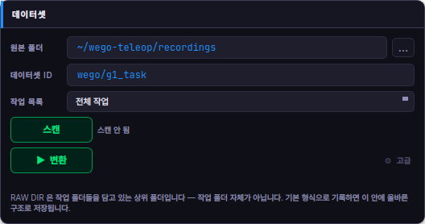
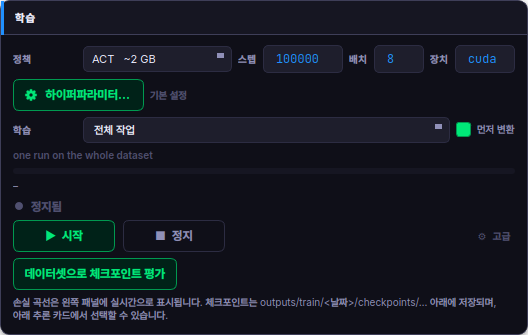
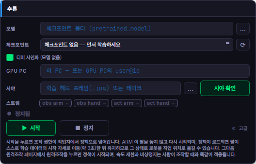
8.7 설정 창 (⚙)
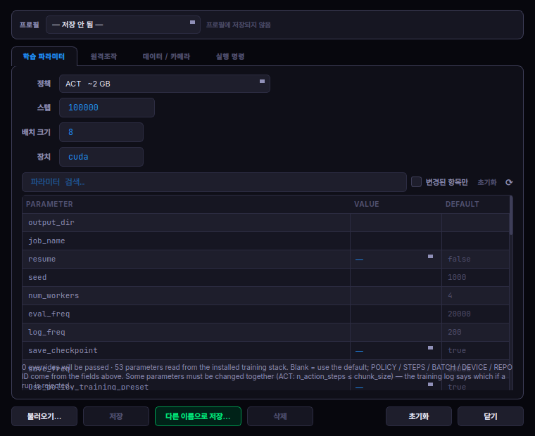
하나의 창, 네 개의 탭 — 학습 파라미터, 원격조작, 데이터 / 카메라, 실행 명령 — 에 작업자가 바꿀 수 있는 모든 값이 모여 있습니다. 아래쪽 버튼: 불러오기… 저장 다른 이름으로 저장… 삭제 초기화 닫기. 이 버튼들은 저장된 프로필(§15)에 대해 동작합니다. 수정은 즉시 반영되며, 초기화 는 창을 열었을 때의 상태로 되돌립니다.
8.8 키보드
3D 화면 위에서 R 을 누르면 카메라 시점이 초기화됩니다(⟲ 버튼과 동일). 화면은 드래그로 회전, 스크롤로 확대/축소할 수 있습니다.
상태 배지
제어 카드에는 두 줄의 배지가 있습니다 — 시스템이 지금 무엇을 하고 있는지 가장 빨리 확인하는 방법입니다.
첫째 줄 — 무엇이 연결되어 있는가
오프라인 MOTION DEBUG SIM (로봇 없음)
| 오프라인 | 팔 모듈이 실행 중이 아님 |
| MOTION | 로봇이 스스로 균형을 잡고, 우리는 팔을 제어 |
| DEBUG | 모든 관절을 직접 제어 — 로봇을 지지해야 함 |
| SIM (로봇 없음) | 미리보기 전용 — 로봇에 접근하지 않음 |
| 사람 / 재생 / 정책 | 지금 명령하는 주체: 작업자, 기록, 학습된 스킬 |
둘째 줄 — 팔이 무엇을 하고 있는가
| 오프라인 | 실행 중이 아님 |
| 준비 (해제됨) | 실행 중이지만 로봇을 구동하지 않음 — 시작 직후의 상태 |
| 제어 | 중립 준비 자세로 이동 중 |
| 동기화 중… | 추종으로 진입 중 |
| 원격조작 | 작업자를 추종 중 |
| 대기 | 준비 자세로 복귀, 추종하지 않음 |
| 일시정지 | 자세 유지 중 |
| 비상정지 (댐핑) | 비상 정지가 눌림 |
옆에는 현재 파지 모드가 표시됩니다. 기본 배지는
● 약함 이며, 모드를 한 번 선택하면
그 뒤로는 인터페이스가 한국어로 설정되어 있어도 항상 내부 모드 키를
영어로 표시합니다 — ● FULL, ● SOFT,
● ADAPTIVE.
시스템 조작
이 시스템은 로봇이 예기치 않게 움직이지 않도록 설계되어 있습니다. 몇 단계를 차례로 거치며, 작업자가 지시할 때만 로봇이 동작합니다.
1단계 — 미리보기 시작
팔 카드와 손 카드에서 ▶ 시작 을 누릅니다. 이 시점에서 로봇은 움직이지 않습니다 — 3D 미리보기가 작업자를 따라오는 것만 보입니다. 이 단계에서 추종이 정확한지, 편안한 시작 자세인지 확인하십시오. 로봇은 지금 연결해도 되고 나중에 연결해도 됩니다.
2단계 — 제어 넘기기
제어 를 누릅니다. 로봇이 약 3초에 걸쳐 중립
준비 자세로 부드럽게 이동합니다 — 갑작스러운 움직임은 없습니다. 로봇이
움직이지 않고 로그에 진입할 수 없다는 메시지가 나오면, 제어판이 로봇의
현재 위치를 받지 못해 맹목적으로 움직이기를 거부한 것입니다.
TROUBLESHOOTING.md §2 를 보십시오.
3단계 — 자세 맞추고 진입
로봇이 준비 자세에 있는 상태에서 자신의 몸을 그 자세에 맞춥니다. 그다음 원격조작 을 누릅니다. 약 2초에 걸쳐 로봇의 현재 자세에서 추종으로 전환되며, 전환 중에도 작업자를 계속 추종하므로 도중에 움직여도 튀지 않습니다.
4단계 — 원격조작
자연스럽게 움직이십시오. 팔과 손가락 동작이 실시간으로 반영됩니다. 동작의 느낌은 설정 창에서 조정할 수 있습니다: 더 민감하게 추종할수록 반응은 빠르고 부드러움은 줄어들며, 더 완만하게 추종할수록 부드럽지만 빠른 동작을 따라가지 못합니다.
5단계 — 일시정지 또는 정지
- 일시정지 — 자세를 바꾸는 동안 로봇을 그 자리에 유지합니다.
- 대기 — 준비 자세로 돌아가고 추종을 멈춥니다.
- 비상정지 — 모든 동작을 즉시 정지합니다 (§12).
- ■ 정지 — 모듈을 종료합니다. 비상 정지가 아닙니다.
VR 모드 (Meta Quest) — R1
슈트 대신 작업자가 Meta Quest 3 / 3S 또는 PICO 4 Ultra 를 착용하고 두 컨트롤러로 로봇의 팔과 손을 조작할 수 있습니다. 헤드셋에서는 Humanoid Studio VR 앱(한국어)이 실행되며, 로봇, 정렬 가이드, 로봇 상태를 보여 줍니다. 아래 절차는 R1 기준이며, G1과 H2도 R1 참고 사항을 제외하면 같습니다.
시작 전 확인
- 헤드셋과 PC가 같은 Wi-Fi 네트워크 에 있어야 합니다. 헤드셋은 PC의 8443 포트(TCP)로 접속하고, 8444 포트(UDP) 브로드캐스트로 PC를 찾습니다. PC에 방화벽이 있다면 두 포트를 모두 허용해야 합니다.
- 헤드셋은 처음 연결한 PC에 계속 연결됩니다. 같은 Wi-Fi에서 다른 Humanoid Studio가 실행 중이어도 마찬가지입니다. 콘솔 맨 아래 줄에 연결된 로봇과 PC, 그리고 같은 네트워크의 다른 PC가 표시됩니다. 다른 PC로 옮기려면 콘솔의 PC 변경 을 두 번 누릅니다. 이미 헤드셋이 연결된 PC는 두 번째 헤드셋을 받지 않습니다.
- 로봇은 평소처럼 연결(IFACE)되어 서서 균형을 잡고 있어야 합니다.
- R1의 BrainCo 손은 로봇 자체 PC(
192.168.123.164)의 손 서비스가 구동하며, 이 서비스는 로봇이 켜질 때 자동으로 시작됩니다.
시작
- PC에서 모드 를 VR (퀘스트 / PICO), 로봇 을 R1, 로봇 모드 를 Motion 으로 두고 팔 카드에서 ▶ 시작 을 누릅니다. 핸드 를 BrainCo Revo2 로 두고 손 카드에서도 ▶ 시작 을 누릅니다.
- 헤드셋을 쓰고 앱 라이브러리에서 Humanoid Studio VR 을 엽니다 (스토어 밖에서 설치한 앱은 알 수 없는 출처 에 표시됩니다). 앱이 PC를 자동으로 찾으면 연결 표시가 녹색이 되고 로봇 표시에 R1 이 나타납니다.
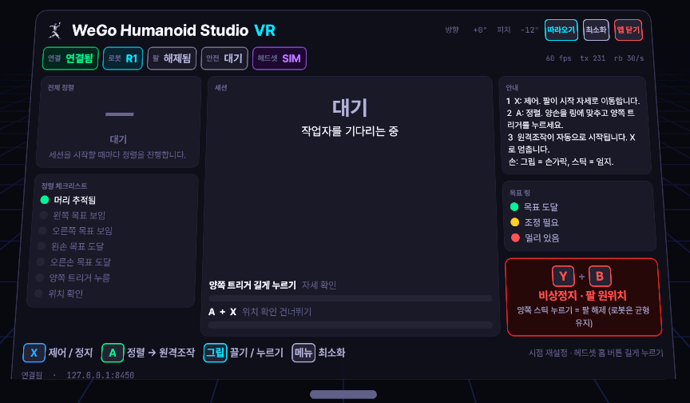
컨트롤러 버튼
| 버튼 | 역할 |
|---|---|
| X | 제어: 팔이 약 3초에 걸쳐 시작 자세로 이동합니다. 원격조작 중에 누르면 추종을 멈추고 팔을 시작 자세로 되돌립니다 |
| A | 정렬 을 시작합니다. 정렬이 끝나면 원격조작이 자동으로 시작됩니다 |
| 그립 (옆 버튼) | 로봇 손의 네 손가락을 함께 굽힙니다 |
| 썸스틱 (누르지 말고 기울이기) | 로봇 엄지를 움직입니다. 손바닥 쪽으로 기울이면 엄지가 손바닥을 가로질러 돌고(맞섬), 앞으로 기울이면 굽혀집니다. 가운데는 절반 |
| Y + B | 비상 정지: 추종을 멈추고 팔이 원위치로 돌아가며 손이 펴집니다 |
| 양쪽 썸스틱 누르기 | R1 Motion 모드: 팔을 로봇 자체 제어기에 넘겨 해제 합니다(들어 올린 팔이 떨어질 수 있음). 로봇은 균형을 유지합니다. Debug 모드와 G1·H2에서는 로봇 전체의 힘이 풀립니다(댐핑). 손이 펴집니다 |
| 그립 (원격조작 중이 아닐 때 패널을 가리킨 채) | 패널을 끌어 옮기거나 패널의 버튼을 누릅니다 |
| 메뉴 (왼쪽) | 콘솔을 최소화합니다 |
| 헤드셋 홈 버튼(Meta / PICO) 길게 | 시점을 재설정합니다 |
| 앱 닫기 (콘솔 오른쪽 위, 빨간색) | 가리킨 채 그립을 3초 안에 두 번 누르면 앱이 종료됩니다. 원격조작 중에는 숨겨집니다 |
조작 순서
- 편하게 선 뒤 X 를 누릅니다. 로봇의 팔이 시작 자세로 이동합니다.
- A 를 누릅니다. 로봇 손목 위치에 링 두 개가 나타납니다. 양손을 링에 맞추고 게이지가 100%가 될 때까지 양쪽 트리거 를 누르고 있습니다. 각 손을 어느 쪽으로 움직일지 헤드셋이 알려 줍니다. 위치 확인이 통과되지 않으면 트리거를 누른 채 A 를 누르고 X 를 함께 눌러 건너뜁니다.
- 원격조작이 자동으로 시작되고 콘솔이 상태 줄로 작아집니다. 자연스럽게 움직이면 팔은 컨트롤러를, 손은 그립과 썸스틱을 따라갑니다. 손은 원격조작 중에만 움직입니다.
- 멈추려면 X 를 누릅니다. 팔이 시작 자세로 돌아가고 손은 쥔 상태를 유지합니다. 다시 하려면 A 로 정렬부터 진행합니다.
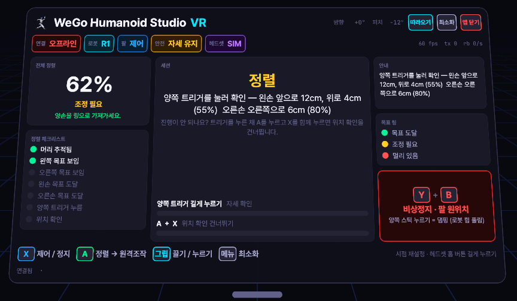
헤드셋이 손 방향이 로봇 정면에서 벗어났다고 경고하면, 정면을 보거나 헤드셋 홈 버튼(Meta / PICO)을 길게 눌러 시점을 재설정하십시오.
R1 참고 사항
- R1에서는 로봇 카메라 패널이 비어 있습니다. VR 모드의 R1 카메라 영상은 아직 지원되지 않습니다.
- 손가락이 물체나 엄지에 막혀 멈추면 그 자리에 머뭅니다. 다시 움직이려면 그립을 조금 놓거나 엄지를 뒤로 뺀 뒤 다시 하십시오.
- R1 Motion 모드에서 썸스틱 조합은 팔만 해제합니다. 로봇 전체를 멈추려면 로봇 자체 리모컨을 사용하십시오.
손 파지 모드
세 가지 모드가 있으며, 파지 도중에도 전환할 수 있습니다.
| 모드 | 동작 |
|---|---|
| 강한 파지력 | 최대 힘. 단단한 물체를 확실히 잡을 때 |
| 약한 파지력 (기본값) | 부드럽고 순응적인 파지. 접촉을 감지하면 더 이상 닫지 않으므로 깨지기 쉬운 물체도 부수지 않고 잡습니다 |
| 적응형 | 촉각 센서를 사용합니다: 첫 접촉을 감지하고, 물체가 얼마나 무른지 확인한 뒤 그에 맞게 유지하며, 미끄러지기 시작하면 조금 더 조입니다 |
열기 는 잡고 있던 것을 즉시 놓습니다.
비상 정지
비상정지 버튼은 제어판에 항상 표시되어 있습니다.
- 팔 구동을 멈추고 힘을 뺍니다,
- 손을 열어 잡고 있던 물체를 놓습니다,
- 시스템을 안전한 대기 상태로 되돌립니다.
중요: 비상 정지는 로봇의 구동을 멈추는 것입니다. 로봇을 붙잡거나 지탱해 주지 않습니다. 스스로 균형을 잡지 않는 상태의 로봇(Debug 모드)은 미리 지지되어 있어야 합니다.
기록, 카메라, 검토 및 편집
원격조작 세션을 재사용 가능한 데이터셋으로 기록합니다 — 로봇의 전체 동작과 동기화된 카메라 영상을 함께 저장합니다.
기록 방법
- 영상을 함께 남기려면 카메라를 먼저 시작합니다 (§8.5).
- 평소처럼 원격조작합니다 (§10).
- 작업 을 입력하거나 선택합니다 — "빨간 컵 집기" 같은 평범한 지시문입니다. 이 문구는 기록과 함께 저장되며, 학습된 스킬이 나중에 이 동작과 연결지어 배우는 대상입니다.
- ● 기록 을 눌러 시작합니다.
- 시연을 수행합니다.
- ■ 기록 정지 를 눌러 마칩니다. 각 시연은 자동으로 저장됩니다.
비어 있거나 잘못 시작된 기록은 버려집니다. 시연과 시연 사이에는 언제든 드롭다운에서 다른 작업을 선택할 수 있습니다 — 재시작이 필요 없습니다. 새로 입력하지 말고 목록에서 기존 작업을 선택하십시오: "컵 집기" 와 "그 컵 집기" 는 서로 다른 두 작업이 됩니다.
좋은 데이터셋의 조건
- 양보다 일관성 — 매번 같은 방식으로 시연하십시오.
- 불필요한 앞뒤를 잘라내십시오 — 시작 전과 종료 후의 시간은 "아무것도 하지 말라"고 가르치는 셈입니다.
- 바뀌어야 할 것만 바꾸십시오 — 물체 위치가 중요하다면 시연마다 옮기십시오.
- 단일 작업 스킬이라면 깨끗한 시연 20~50회 가 현실적인 출발점입니다.
카메라
원격조작에는 선택 사항이고, 영상을 사용하는 스킬을 학습하려면 필수입니다. 카메라 영역에서 호스트 (로봇 PC2 또는 이 PC)를 정하고, 카메라 줄마다 종류 + 식별자를 입력한 뒤 (RealSense → 시리얼 번호, OpenCV → 장치 번호) ▶ 카메라 를 누릅니다.
15 로 설정하십시오(해상도는 그대로,
속도만 낮아짐; USB 3 는 30 도 문제없음). 다른 프로그램이 카메라를 점유하고
있을 수도 있습니다 — 로봇에서는 공장 출하 서비스가 머리 카메라를 잡고 있을
수 있으며(Device or resource busy), TROUBLESHOOTING.md
§5 를 참고하십시오.검토 및 편집
찾아보기… 또는 최신 으로 기록을 선택한 뒤, 시각화 로 하나의 스크러블 가능한 타임라인(3D 로봇 + 모든 관절 + 카메라 영상을 함께)을 확인하거나 — 학습에 쓰기 전에 기록이 온전한지 확인하는 방법입니다 — 재생 → 미리보기 로 로봇을 건드리지 않고 화면에서만 재생합니다.
에피소드 편집기 (에피소드 편집)
| 버튼 | 역할 |
|---|---|
| ▶ 재생 / ❚❚ 일시정지 | 에피소드 또는 선택 구간 재생 |
| 반복: 에피소드 전체 / 선택 구간 | 반복 재생 범위 |
| 전체 선택 | 에피소드 전체 선택 |
| 선택 구간 유지 | 선택 구간만 남기고 나머지 삭제 |
| 선택 구간 삭제 | 선택 구간만 삭제하고 나머지 유지 |
| 에피소드 삭제 | 이 시연을 통째로 삭제 |
학습 및 스킬 실행
1. 데이터셋 준비
데이터셋 카드에서 원본 폴더 를 작업 폴더들이 들어 있는 상위 폴더로 지정하고(작업 폴더 자체가 아님), 데이터셋 ID 를 정하고, 포함할 작업 목록 을 체크한 뒤 ▶ 변환 을 누릅니다. 내용을 먼저 확인하려면 스캔 을 누르십시오.
2. 학습
정책, 스텝, 배치 를
정하고 ▶ 시작. 실시간 그래프로 진행 상황이
표시되고, 남은 시간과 현재까지의 최고 성능을 알려줍니다.
⚙ 하이퍼파라미터… 로 그 밖의 모든 설정을 열 수
있으며, 카드에 기본 설정 또는 N개 항목 변경됨
이 표시되므로 변경된 학습을 놓치지 않습니다.
| 정책 | 대략 필요량 | 8 GB 카드에서 |
|---|---|---|
| ACT | 2 GB | 가능 |
| Diffusion | 3 GB | 가능 |
| VQ-BeT | 4 GB | 가능 |
| SmolVLA | 12 GB | 불가 |
| π0 / π0.5 / GR00T (연구용 · 비상업) | 45 GB | 불가 |
전체 파인튜닝 기준의 추정치이며, 배치 크기 · 카메라 수 · 해상도에 따라 달라집니다. 어떤 모델은 하나의 작업만 배우고, 어떤 모델은 지시문을 듣고 여러 작업을 하나의 학습으로 구분합니다. 기록은 모델과 무관합니다: 한 번 기록해서 여러 번 학습할 수 있습니다.
GR00T 는 연구용 (비상업) 옵션입니다. NVIDIA 가 GR00T-N1.5-3B 가중치를 비상업적 용도로만 공개하므로, WeGo 는 GR00T 를 상업용 기능으로 제공하지 않습니다(§2 참조).
3. 결과 확인
데이터셋으로 체크포인트 평가 로 기록을 학습된 스킬에 통과시켜 실제 조작과 관절별로 비교합니다. 학습에 사용한 바로 그 에피소드에서 팔의 평균 오차가 약 2° 를 넘는다면 앞 단계에 문제가 있다는 뜻입니다 — 스텝을 늘려도 해결되지 않습니다. 먼저 시연을 살펴보십시오.
4. 로봇에서 스킬 실행
체크포인트 에서 스킬을 선택하고 추론 카드에서 ▶ 시작 을 누릅니다. 팔 모듈이 팔을 놓지 않고 다시 시작됩니다. 스킬이 로드되면 팔이 스스로(약 3초) 학습 데이터가 시작한 자세로 이동해 유지하므로 그 주변을 비워 두십시오. 그다음 로봇을 데이터를 녹화한 위치로 옮기십시오: 스킬은 학습한 장면만 알고 있습니다. 시야 확인 은 실시간 헤드 카메라 영상 위에 학습 프레임을 겹쳐 보여 주고, 둘이 맞을 때까지 어느 방향으로 옮겨야 하는지 알려 줍니다. 원격조작 을 눌러야 스킬이 로봇을 움직이며, 누르는 즉시 그 자세에서 시작합니다. 스킬은 평소 모션캡처가 있던 자리를 그대로 차지할 뿐이므로 모든 안전 장치가 유지됩니다: 수동 원격조작과 같은 속도 제한이 적용되고, 비상 정지도 그대로 살아 있습니다. 카메라 영상으로 학습한 스킬이라면 카메라가 실행 중이어야 합니다. 더 높은 그래픽 성능이 필요한 스킬은 다른 컴퓨터에서 실행할 수 있습니다: 추론 카드의 GPU PC 에 그 컴퓨터를 입력하십시오.
설정 프로필
로봇, 손, 네트워크, 카메라, 작업, 데이터셋, 학습 옵션과 모든 하이퍼파라미터까지 — 모든 설정을 이름 있는 프로필 로 저장하고 헤더에서 한 번에 불러올 수 있습니다.
- 다른 이름으로 저장… — 현재 설정을 이름 붙여 저장합니다.
- 불러오기… — 저장된 설정으로 전환합니다.
- 제어판은 마지막에 사용한 프로필로 다시 열립니다.
- 헤더의
— 저장 안 됨 —은 현재 설정이 어디에도 저장되어 있지 않다는 뜻입니다.
장비마다 프로필 하나를 유지하십시오. 이전 버전에서 저장한 프로필은 알지 못하는 항목을 그대로 두므로, 업그레이드 때문에 설정이 비워지는 일은 없습니다.
자체 소프트웨어 연동
이 장은 개발 담당자를 위한 내용입니다. 시스템 운용에는 필요하지 않지만, 데이터를 다른 곳에 기록하거나, 자체 제어기로 로봇을 구동하거나, 이미 사용 중인 소프트웨어에 로봇을 연결하려면 이 방법을 사용합니다.
이 시스템은 닫힌 상자가 아닙니다. 시스템이 보고, 명령하고, 측정하는 모든 값이 일반 ZeroMQ 소켓으로 실시간 공개되며, PC의 어떤 프로그램이든 그대로 읽을 수 있습니다. 반대로 사용자의 프로그램이 같은 방식으로 명령을 보낼 수도 있습니다. 설치할 SDK도, 별도의 라이선스 키도 없습니다. ZeroMQ는 Python, C++, C#, Java, MATLAB, ROS 노드에서 바인딩을 제공하며, 메시지는 32비트 실수 배열입니다.
공개되는 데이터
| 포트 | 내용 |
|---|---|
| 5559 | 명령 — 조작자의 전신 동작을 로봇에 리타게팅한 값 |
| 5560 | 명령 — 손으로 보내는 손 자세 |
| 5561 | 측정 — 팔 각 관절의 실제 위치·속도·토크 |
| 5562 | 측정 — 각 손의 실제 손가락 위치와 파지력 |
| 5564 | 로봇 변환 이전의 사람 손 원본 자세 (손당 21점) |
| 5563 | 글러브의 손목 방향 |
| 5555 | 카메라 영상 (JPEG, 촬영 시각 포함) |
배터리 잔량과 모터 온도는 이 소켓이 아니라 로봇 자체의 네트워크 인터페이스에서 읽습니다. 그래서 아무것도 시작하지 않은 상태에서도 제어판에 로봇 상태가 표시됩니다.
스트림 하나를 읽는 데에는 다섯 줄이면 충분합니다.
import zmq, numpy as np
sub = zmq.Context().socket(zmq.SUB)
sub.setsockopt(zmq.SUBSCRIBE, b"")
sub.connect("tcp://127.0.0.1:5561") # 측정된 팔 상태
while True:
print(np.frombuffer(sub.recv(), dtype=np.float32))구독은 시스템에 부하를 주지 않으며 운용을 방해할 수 없습니다. 구독 쪽이 느리면 샘플을 건너뛸 뿐입니다.
자체 프로그램으로 로봇 명령하기
사용자의 소프트웨어가 조작자의 자리를 대신할 수도 있습니다. 포트 5565(몸통) 와 5566(손) 으로 목표 위치를 보내면 로봇이 그것을 따릅니다. 학습된 스킬이 사용하는 경로와 같은 경로입니다.
조작자가 제어 에 이어 원격조작 을 누르기 전까지 로봇은 움직이지 않고, 관절별 속도 제한이 적용되며, 비상정지 도 계속 살아 있습니다. 이 안전 장치를 우회하는 인터페이스는 설계상 존재하지 않습니다.
기록된 세션
기록 데이터도 개방되어 있습니다 — 일반 JSON과 JPEG 파일(또는 HDF5)이며, 항목마다 문서화되어 있습니다. 각 에피소드는 스스로를 설명합니다: 어떤 로봇과 손으로 기록했는지, 카메라 구성은 무엇이었는지, 작업 지시문은 무엇이었는지, 각 값이 무엇을 뜻하는지가 파일 안에 들어 있습니다. 이 애플리케이션 없이 자체 도구로 읽을 수 있습니다.
하드웨어 없이 먼저 시험하기
시스템에는 합성 데이터 발행기가 함께 제공됩니다. 로봇도, 모션캡처도, 카메라도 연결되지 않은 상태에서 모든 포트에 실제와 같은 형식의 데이터를 내보냅니다. 이것을 상대로 연동을 개발하고 시험할 수 있으며, 실제 시스템으로 옮길 때는 코드가 아니라 실행하는 프로그램만 바뀝니다. 모든 포트의 실시간 수신 속도를 한 화면에 보여 주는 점검 도구도 함께 제공되므로, “로봇이 보내지 않는 것인가” 와 “내 프로그램이 잘못된 것인가” 를 혼동할 일이 없습니다.
상세 문서
| 문서 | 내용 |
|---|---|
docs/API.md | 전체 규격 — 모든 스트림, 정확한 배열 구성, 단위, 로봇·손별 배열 길이 |
examples/README.md | 실행 가능한 예제 프로그램(스트림별), 합성 발행기, 스트림 점검 도구 |
docs/joint_names.json | 기계 판독용 관절 이름과 인덱스 표 |
예제는 pip install pyzmq numpy 만 있으면 되고 Python 3.8
이상이면 실행됩니다 — 이 애플리케이션을 import 하지 않습니다.
배열 길이는 사용하는 로봇과 손에 따라 달라집니다. 길이를 단정하지 말고 메시지에서 읽으면, 같은 프로그램이 지원되는 모든 구성에서 그대로 동작합니다.
안전 지침
- 작업 중에는 작업 공간에 사람과 장애물이 없도록 하십시오.
- 진입 전에 항상 미리보기 단계로 추종을 확인하십시오.
- 공간이 확보되고 준비가 된 뒤에만 제어 → 원격조작으로 진입하십시오.
- 비상 정지를 항상 손이 닿는 곳에 두십시오.
- 깨지기 쉽거나 무르거나 처음 다루는 물체에는 약한 파지력 또는 적응형을 사용하십시오.
- Debug 로봇 모드에서는 로봇이 스스로 서 있지 못합니다 — 시작 전에 반드시 지지하거나 매달아야 합니다.
- 학습된 스킬은 새로운 작업자처럼 대하십시오: 처음에는 넓은 공간에서, 비상 정지에 손을 올린 채.
- 무엇이든 이상해 보이면 먼저 비상 정지를 누르고 나서 상황을 확인하십시오.
지원 요청
발생할 수 있는 문제와 해결 방법은 TROUBLESHOOTING.md 에
정리되어 있습니다. 문제가 계속되면 다음을 함께 담당자에게 전달해
주십시오:
- 설치 폴더의
VERSION파일 내용. - 무엇을 하다가 무슨 일이 일어났는지.
- 제어판 아래쪽 로그 창의 마지막 화면 분량. 터미널에서 실행했다면 그 출력.
go.support@wego-robotics.com